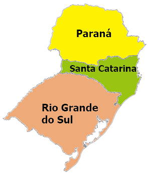

Região Sul
A região Sul é conhecida pelo grande contingente populacional europeu que ali chegou séculos atrás, tendo lugares que são bem parecidos com o Velho Mundo (Europa).

A região Sul do Brasil tem como uma de suas características a forte presença europeia em seu processo de colonização e povoamento. Assim, possui traços europeus marcantes na arquitetura, na culinária, na população e até no clima, pois é a única do país cujos estados estão abaixo do Trópico de Capricórnio. Devido ao clima, essa região atraiu muitos europeus durante os séculos XIX e XX, o que possibilitou um processo de colonização diferente de outras regiões brasileiras.